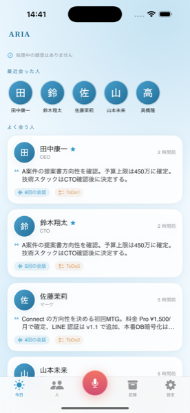
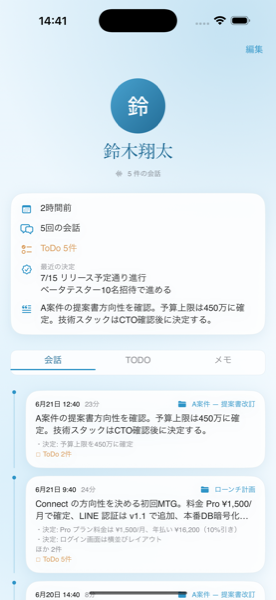
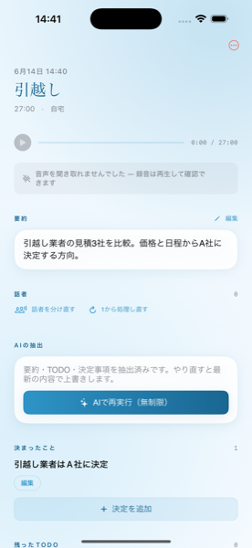

ARIAは録音アプリではありません。会議や面談を入口にした、人間関係と案件の経緯ダッシュボード。「あの人と、いつ、何を話したか」が、いつでも引き出せます。
App StoreでダウンロードiPhone・iOS 17以降・基本無料
録音は、手段でしかない。
本当の価値は、それが人ごと・案件ごとに積み上がっていくこと。
面倒な入力はありません。ワンタップで録音し、止めるだけ。
会議や面談を録音。アクションボタンやコントロールセンターからも起動できます。
音声は端末から出ません。文字起こしも「誰が話したか」も、すべて端末上で処理。
要点・決定事項・TODOが整理され、人ごと・案件ごとのタイムラインに積み上がります。


話した内容をキーワードで横断検索。「あの話、いつだっけ」を一瞬で。
予定や相手をひもづけ。端末内で照合し、文脈を自動で補います。
解析SDKもゼロ。あなたの会話を商材にしません。
単発の文字起こしだけが目的なら、より安価な専用アプリで十分。ARIAは“経緯が積み上がる”ことに価値があります。
「前回◯◯さんと何を決めたか」が売上に直結する。商談相手が多くても、相手ごとに経緯を引き出せる。
クライアントごとの面談履歴と宿題を取り違えない。次回の打ち合わせ前に、経緯を一覧で確認。
面談が連続しても、誰に何を話したか記憶が混ざらない。メンバーごとの積み重ねが見える。
プライバシーは“柱の一本”。技術的に、できる限り端末の中で完結させています。
録音した音声データは外部サーバーに送信されません。
文字起こし・話者分離は端末上のAIで実行。
要約・TODO抽出時のみ、文字起こし後のテキストを送信（音声は送りません）。学習には使われません。
ログインなしで全機能。個人情報をひもづけて集めません。
AI抽出（要約・TODO・決定事項）の回数だけが、プランで変わります。
いいえ。音声は端末内にのみ保存され、文字起こし・話者分離も端末上で行います。AI抽出を使うときだけ、文字起こし後のテキストを処理のため送信します（音声は送りません）。学習には使われません。
声紋メモリで、一度ひもづけた人は次回から声で自動提案します。使うほど精度が上がります。静かな環境での録音がおすすめです。
iPhoneの「設定 > Apple ID > サブスクリプション」からいつでも解約できます。録音・文字起こし・検索は解約後も無料で使えます。
iPhone（iOS 17以降）に対応しています。新しい端末ほど文字起こしが高速・省電力です。
録音にあたっては、相手方の同意を得るなど適用法令の遵守が利用者の責任となります。詳しくは利用規約をご確認ください。